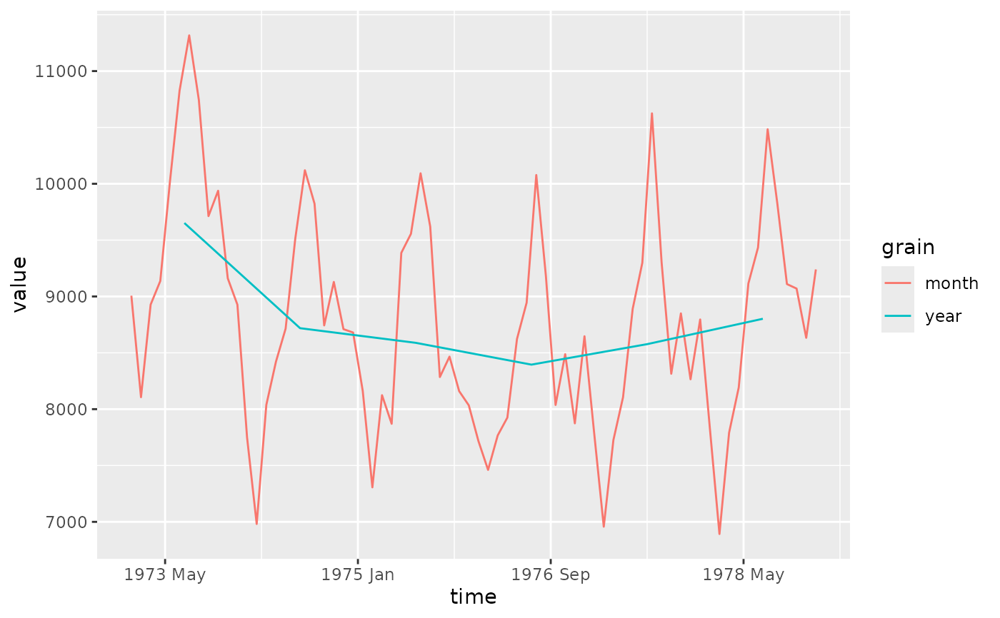

These are the default scales for mixtime vectors, responsible for mapping
time points to aesthetics along with identifying break points and labels for
the axes and guides. To override the scales behaviour manually, use
scale_*_mixtime. The primary purpose of these scales is to scale time
points across multiple granularities onto a common time scale. This is
achieved by identifying and coercing all time points to the finest chronon
that all time points can be represented in. This common time chronon is
automatically identified, but can be manually specified using the
time_chronon argument.
scale_x_mixtime(
name = waiver(),
breaks = waiver(),
time_breaks = waiver(),
minor_breaks = waiver(),
time_minor_breaks = waiver(),
labels = waiver(),
time_labels = waiver(),
time_chronon = waiver(),
align_discrete = aes_nudge(),
transform = "identity",
limits = NULL,
expand = waiver(),
oob = scales::censor,
guide = waiver(),
position = "bottom",
sec.axis = waiver()
)
scale_y_mixtime(
name = waiver(),
breaks = waiver(),
time_breaks = waiver(),
minor_breaks = waiver(),
time_minor_breaks = waiver(),
labels = waiver(),
time_labels = waiver(),
time_chronon = waiver(),
align_discrete = aes_nudge(),
transform = "identity",
limits = NULL,
expand = waiver(),
oob = scales::censor,
guide = waiver(),
position = "left",
sec.axis = waiver()
)The name of the scale. Used as the axis or legend title. If
waiver(), the default, the name of the scale is taken from the first
mapping used for that aesthetic. If NULL, the legend title will be
omitted.
One of:
NULL for no breaks
waiver() for the breaks specified by date_breaks
A Date/POSIXct vector giving positions of breaks
A function that takes the limits as input and returns breaks as output
A duration giving the distance between breaks, such as
mixtime::weeks(2L) or mixtime::years(10L). If both breaks and
time_breaks are specified, time_breaks wins.
One of:
NULL for no breaks
waiver() for the breaks specified by date_minor_breaks
A Date/POSIXct vector giving positions of minor breaks
A function that takes the limits as input and returns minor breaks as output
A duration giving the distance between minor
breaks, such as mixtime::weeks(2L) or mixtime::years(10L). If both
minor_breaks and time_minor_breaks are specified, time_minor_breaks
wins.
One of the options below. Please note that when labels is a
vector, it is highly recommended to also set the breaks argument as a
vector to protect against unintended mismatches.
NULL for no labels
waiver() for the default labels computed by the
transformation object
A character vector giving labels (must be same length as breaks)
An expression vector (must be the same length as breaks). See ?plotmath for details.
A function that takes the breaks as input and returns labels as output. Also accepts rlang lambda function notation.
A mixtime format string to format the labels, as described
in vignette("time-format-strings", package = "mixtime").
A time granule that defines the common chronon to use for
mixed granularity (e.g. mixtime::tu_day(1L)). The default automatically
selects it as the finest chronon that all time points can be represented in.
Either a single number between 0 and 1, or a
aes_nudge() object, defining how to align coarser granularities
onto the common time scale.
If a single number is supplied, it is used for all positional aesthetics: 0 means start alignment, 1 means end alignment, and 0.5 means center alignment (the default).
To specify different offsets for different positional aesthetics (e.g.
x, xmin, xend, y, ymin, ...), pass a aes_nudge() call,
for example:
`align_discrete = aes_nudge(center = 0.5, left = 0.25, right = 0.75)“
The center, left, and right arguments apply to the semantically
equivalent positional aesthetics (e.g. left applies to xstart, xmin,
and xlower).
A transformation applied to the time scale, after time
points have been mapped onto the common time scale. Given as either a
<transform> object or the name of one. Defaults to "identity", applying
no further transformation.
One of:
NULL to use the default scale range
A numeric vector of length two providing limits of the scale.
Use NA to refer to the existing minimum or maximum
A function that accepts the existing (automatic) limits and returns
new limits. Also accepts rlang lambda function
notation.
Note that setting limits on positional scales will remove data outside of the limits.
If the purpose is to zoom, use the limit argument in the coordinate system
(see coord_cartesian()).
For position scales, a vector of range expansion constants used to add some
padding around the data to ensure that they are placed some distance
away from the axes. Use the convenience function expansion()
to generate the values for the expand argument. The defaults are to
expand the scale by 5% on each side for continuous variables, and by
0.6 units on each side for discrete variables.
One of:
Function that handles limits outside of the scale limits (out of bounds). Also accepts rlang lambda function notation.
The default (scales::censor()) replaces out of
bounds values with NA.
scales::squish() for squishing out of bounds values into range.
scales::squish_infinite() for squishing infinite values into range.
A function used to create a guide or its name. See
guides() for more information.
For position scales, The position of the axis.
left or right for y axes, top or bottom for x axes.
sec_axis() is used to specify a secondary axis.
When using mixtime vectors to represent time variables in ggplot2, these
scales are automatically applied. In most cases, the default behaviour will
be sufficient for scaling time points into plot aesthetics. These scales can
be used to manually adjust the scaling behaviour, such as adjusting the
breaks and labels or using a different common time scale.
Similarly to the temporal scales in ggplot2 (ggplot2::scale_x_date() and
ggplot2::scale_x_datetime()), these scales can adjust the breaks and labels
using duration-based intervals and time formatting. These time aware
options are prefixed with time_ (e.g. time_breaks and time_labels),
and take precedence over the non-time aware options (e.g. breaks and
labels). The scale's breaks are specified with mixtime::duration()
objects (e.g. time_breaks = mixtime::months(1L)) or a time granule.
Labels are specified with mixtime format strings, which describe a time point
as glue-style {} placeholders holding the granules to show. Since the
granules come from a calendar, this works across calendars rather than only
Gregorian ones: time_labels = "{cyc(month, year, label = TRUE, abbreviate = TRUE)} {lin(year)}" gives "Jan 2020". See
vignette("time-format-strings", package = "mixtime") for the full syntax.
A core feature of these scales is the ability to handle time from multiple
timezones, granularities, and calendars. This is achieved by mapping all time
points to a common time scale, which is automatically identifying the finest
compatible chronon that can represent the input data. This allows time points
across different granularities (e.g. base::POSIXt, base::Date, and
mixtime::yearmonth) to be plotted together on a common time scale. In this
case the finest chronon is 1 second (from base::POSIXt), so all time points
are mapped to a 1 second chronon for plotting. Mapping day and month chronons
to seconds introduces indeterminancy - which second should be used to
represent a day or month? This is resolved using the align_discrete argument,
which defaults to center alignment. This means that a day is mapped to noon,
and a month is mapped to the middle of the month.
Further details about time specific scale options are described in the following sections.
Visualising mixed granularity time data introduces indeterminacy in the
mapping of less precise time points onto a common time scale. For example,
plotting monthly and daily data together raises the question of where to
place the monthly points relative to the daily points. By default, mixtime
uses center alignment, mapping the monthly points to the middle of the
month. This is controlled using the align_discrete argument, which accepts a
value between 0 (start alignment) and 1 (end alignment) and defaults to 0.5.
The common time scale that defines how all granularities are mapped is
automatically identified based on the input data. This is achieved by finding
the finest chronon that all time points can be represented in. For example,
if the data contains both monthly and daily time points, the common time scale
will be daily, with the monthly points aligned according to the align_discrete
argument. If multiple time zones are present, the common time zone will
default to UTC. The common time scale can be manually specified using the
time_chronon argument, which accepts a mixtime::time_unit.
library(ggplot2)
library(dplyr)
uad_month <- tibble(
time = mixtime::yearmonth("1973 Jan") + 0:71,
value = USAccDeaths
)
uad_year <- uad_month %>%
group_by(time = mixtime::year(time)) %>%
summarise(value = mean(value), .groups = "drop")
bind_rows(
month = uad_month,
year = uad_year,
.id = "grain"
) %>%
ggplot(aes(time, value, color = grain)) +
geom_line() +
scale_x_mixtime()
